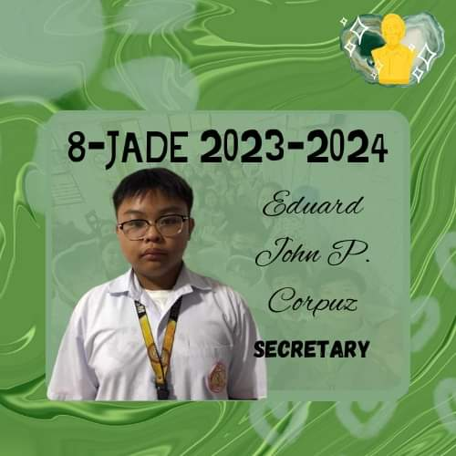

Home
Presenting the Responsible Officers of 8-Jade
this is our lovely president
Adrian Gonzales
He is always alert and act fast when/what ever happens to our section.
The Vice president
Ziana esguerra
the assistant of our president,that always helps our president on anything.

The Secretary
Eduard John corpuz
he has the hand magic a.k.a “beautiful handwriting”.
Treasurer
Julianne Imperial
our trusted money holder.
The Auditor
Valerie Estipona
she assist the treasurer and maintains the class payment method with the treasurer.
The Public Information Officer
Ace Jana Abalos
The trusted PIO always informs and updates us on what upcoming events, pt,quizzes or activities we have
The Peace Officer
Arthur Padrid
always keeps the “peace” in our classroom.